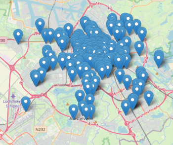
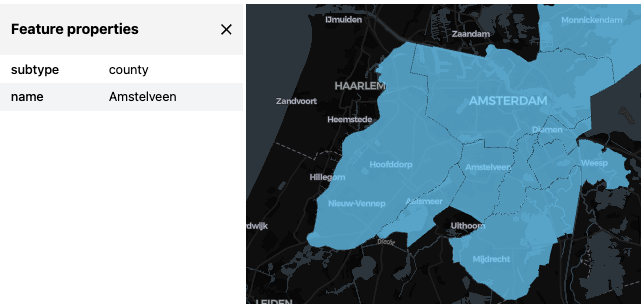

DuckDB on Databricks

DuckDB is a formidable new single-machine analytics tool, tracing its origins to the same Dutch research institute as Python. Crucially for this guide, it comes with a remarkably good Spatial extension.
While Databricks comes with its own set of geospatial features, such as ST functions and H3 functions, nothing stops you to use DuckDB on the side as well.
(What you do have to keep in mind though is that while much of Databricks’s tooling, namely Apache Spark, is focused on big data analysis multi-node clusters, your DuckDB instead will just run on single-node, just like e.g. Pandas would. So use single-node clusters, or Spark UDFs.)
Setting up DuckDB on Databricks
If install spatial fails (especially if you are not using the Free Edition or Serverless Compute, but classic compute), check whether HTTP is blocked on your (corporate) network. If so, then you need to work around it as described here.
This allows you to directly use the DuckDB Spatial, for example:
Visualize DuckDB Spatial output
If your data is simply lon/lat points, you can make use of the built-in point map visualization in Databricks Notebooks if you convert the DuckDB to a Spark DataFrame via Pandas.
Following the New York City pizza restaurants example, but let’s switch to Amsterdam:
query = duckdb.sql(
"""
with t as (
SELECT
id,
names.primary as name,
confidence AS confidence,
CAST(socials AS JSON) as socials,
geometry
FROM
read_parquet('s3://overturemaps-us-west-2/release/2025-07-23.0/theme=places/type=place/*')
WHERE
categories.primary = 'pizza_restaurant'
AND bbox.xmin BETWEEN 4.7 AND 5.0
AND bbox.ymin BETWEEN 52.3 AND 52.4
)
select st_x(geometry) lon, st_y(geometry) lat, name from t
"""
)
query
# Returns:
# ┌───────────┬────────────┬──────────────────────────────────────────┐
# │ lon │ lat │ name │
# │ double │ double │ varchar │
# ├───────────┼────────────┼──────────────────────────────────────────┤
# │ 4.762994 │ 52.3099144 │ Per Tutti │
# │ 4.7789755 │ 52.3381557 │ New York Pizza │
# │ 4.7811585 │ 52.3367951 │ CiCi Pizza │
# │ · │ · │ · │
# │ · │ · │ · │
# │ · │ · │ · │Once the result below is shown, click on the + icon right of the Table tab to add the visualization “Map (Markers)” such as the one shown on the below image.

Or visualize with lonboard, which will work also for other geometry types like linestrings and polygons, again following an Overture Maps example:
query = duckdb.sql(
"""
SELECT
subtype,
names.primary as name,
geometry
FROM
read_parquet('s3://overturemaps-us-west-2/release/2025-07-23.0/theme=divisions/type=division_area/*')
WHERE
4.7 < bbox.xmax AND bbox.xmin < 5.0
AND 52.3 < bbox.ymax AND bbox.ymin < 52.4
AND subtype = 'county'
AND country = 'NL'
"""
)
viz(query).as_html()
Note that clicking on a polygon opens a table with its parameters, in this case the municipalities of Amsterdam and some of its neighbors.
As powerful as Lonboard is, it won’t be able to visualize extremely large numbers of geometries, so if you try and fail at a larger example, try filtering your objects further.
Write Delta Lake Tables from DuckDB
If you want to write a result to a delta lake table (or temporary view), you can use Pandas as an intermediary format:
Read Delta Lake Tables with DuckDB
We can read moderate amount of data from a delta table to duckdb via Arrow (or Pandas). (This assumes that the data volume is not prohibitively large to load into the memory of a single machine.)
dfa = spark.read.table("t").toArrow()
query = duckdb.sql(
"""
select
name
from
dfa;
"""
)
query
# Returns:
# ┌────────────────┐
# │ name │
# │ varchar │
# ├────────────────┤
# │ Haarlemmermeer │
# │ Aalsmeer │
# │ De Ronde Venen │
# │ Amstelveen │
# │ Ouder-Amstel │
# │ Amsterdam │
# │ Diemen │
# │ Waterland │
# └────────────────┘Another, more scalable way to read Delta Lake tables with DuckDB is to use the Databricks Temporary Table Credentials API (not available on Databricks Free Edition as of writing) and the DuckDB Delta extension.
Finally, a high-level tool to make this work would be the DuckDB extension uc-catalog, but this did not reliably work for me (on either Free Edition or “paid” Databricks) as of writing.
Use cell magic %%jupysql for duckdb queries
In Databricks, you can write Databricks SQL code (so not DuckDB SQL code) in SQL code cells, using the %sql cell magic. DuckDB is also compatible with similar cell magic tooling, but in order to not get crossed with Databricks SQL, we’ll need to use another magic, %%jupysql (which is also the name of the package that makes this possible). We can set it all up as the following:
We need to specify the connection object only at the first use of %%jupysql, as below:
%%jupysql
with t as (
SELECT
id,
names.primary as name,
confidence AS confidence,
CAST(socials AS JSON) as socials,
geometry
FROM
read_parquet('s3://overturemaps-us-west-2/release/2025-07-23.0/theme=places/type=place/*')
WHERE
categories.primary = 'pizza_restaurant'
AND bbox.xmin BETWEEN 4.7 AND 5.0
AND bbox.ymin BETWEEN 52.3 AND 52.4
)
select st_x(geometry) lon, st_y(geometry) lat, name from t
-- Returns:
-- Running query in 'duckdb'
-- lon lat name
-- 4.762994 52.3099144 Per Tutti
-- 4.7789755 52.3381557 New York Pizza
-- 4.7811585 52.3367951 CiCi Pizza
-- 4.7812061 52.3368685 Joey's kitchen
-- 4.7500226 52.3816196 Gastronoom
-- 4.7905345 52.34096 Amon
-- 4.7948139 52.3512209 Moeruth Pizza
-- 4.797318 52.3516662 Il Delfino Blu
-- 4.7988733 52.351978 Domino's Pizza
-- 4.8107487 52.3539346 New York Pizza
-- Truncated to displaylimit of 10.Register DuckDB functions as Spark UDFs
See here.